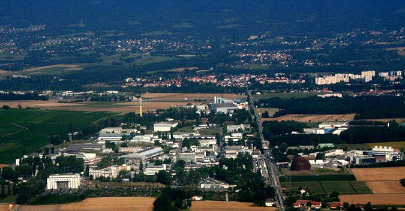

유럽 입자 물리학 연구소는 스위스 제네바와 프랑스 사이의 국경지대에 위치한 세계 최대의 입자 물리학 연구소이다.
원래 명칭은 유럽 원자핵 공동 연구소(Conseil Européen pour la Recherche Nucléaire)였고, 이를 따라서 CERN(IPA 발음: 프랑스어 [sɛʀn], 영어 [sɝn])으로 불린다.
CERN은 설립 초기부터 입자 가속기 등을 이용해, 고 에너지 물리학 연구에 많은 기여를 하였다. 또한 물리학자들의 문헌 검색 및 제휴를 위하여 고안된 HTML과 월드 와이드 웹의 발상지로도 유명하다.
